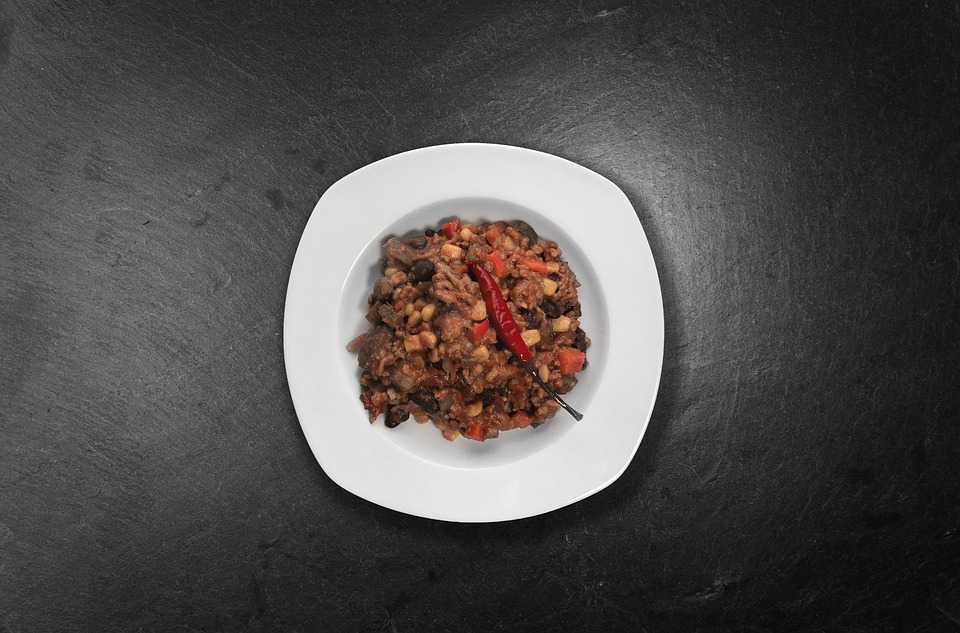

Black Bean Chili

Description
the recipe is quite simple it will take around 40minutes to complete this delicious dish
and by following this recipe there should be plenty for 8 servings.
Ingredients
- 1 tablespoon olive oil
- 1 onion, chopped
- 2 red bell pepper, seeded and chopped
- 1 jalapeno pepper, seeded and minced
- 10 fresh mushrooms, quartered
- 6 roma (plum) tomatoes, diced
- 1 cup fresh corn kernels
- 11 teaspoon ground black pepper
- 1 teaspoon ground cumin
- 1 tablespoon chili powder
- 2 (15 ounce) cans black beans, drained and rinsed
- 1 ½ cups chicken broth or vegetable broth
- 1 teaspoon salt
- Heat oil in a large saucepan over medium-high heat.
- Saute the onion, red bell peppers, jalapeno, mushrooms, tomatoes and corn for 10 minutes or until the onions are translucent.
- Season with black pepper, cumin, and chili powder.
- Stir in the black beans, chicken or vegetable broth, and salt. Bring to a boil.
- Reduce heat to medium low.
- Remove 1 1/2 cups of the soup to food processor or blender; puree and stir the bean mixture back into the soup
- Serve hot by itself or over rice.